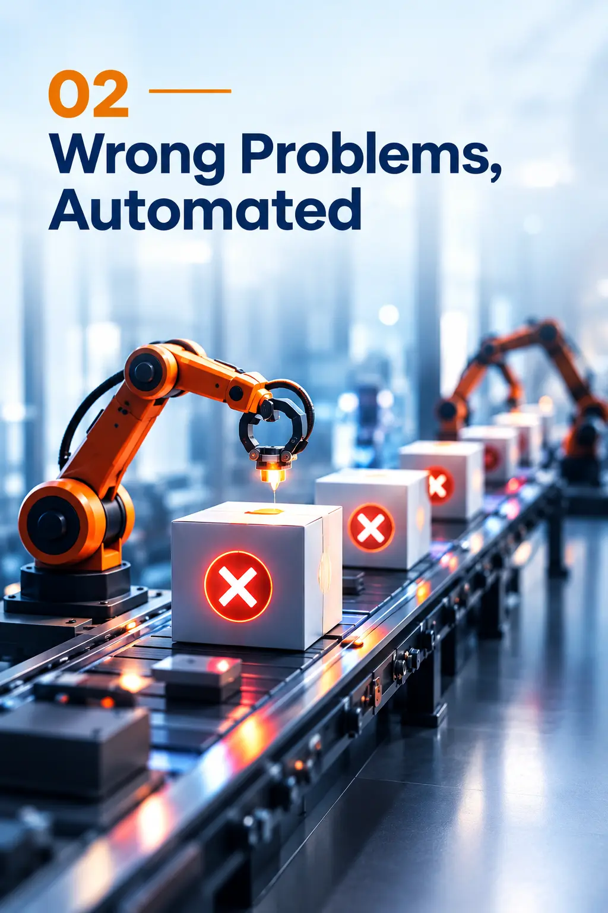
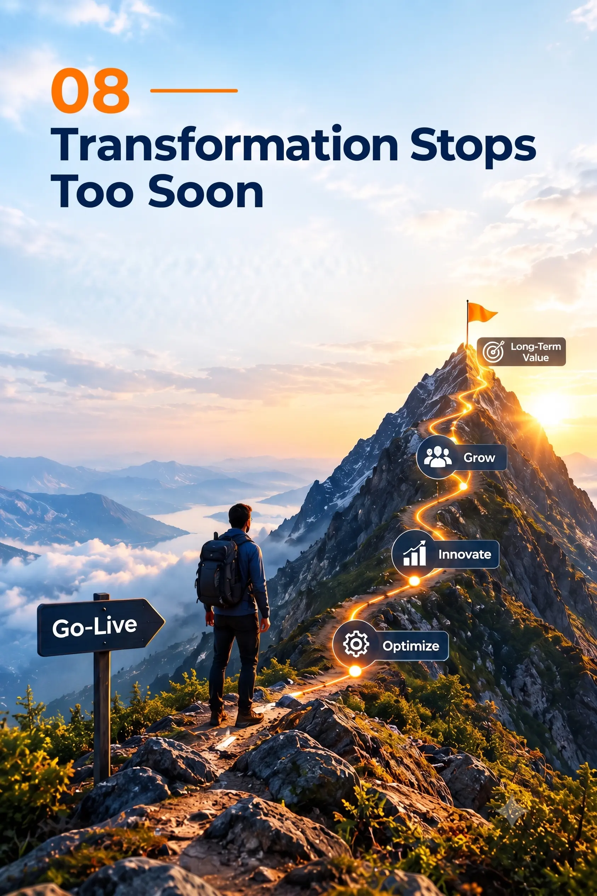

Who We Are
We Believe Technology Should Follow Business Strategy
Assayor Software Solutions LLP is a business transformation consulting company built on a simple belief: technology investment should create measurable business value.
Organizations invest heavily in enterprise applications, digital platforms, automation and technology. But technology alone does not create value. It must help the business grow revenue, reduce costs, improve productivity or enable better decisions.
That is where Assayor begins.
We first understand your business, goals, processes, people and challenges — then design the right technology, architecture and execution strategy to deliver measurable outcomes.
Because technology should not be an expense. It should be an investment that delivers business value.
Our Story
Why Assayor Exists
We created Assayor to bridge the gap between technology investment and business outcomes.
After years of working with organizations, implementing enterprise solutions, advising business leaders and delivering complex transformation programs, we observed a recurring gap:
Organizations were investing heavily in technology, but the focus was often on implementing the technology—not on maximizing the business value it was expected to create.
Why Transformations Fail
Technology has never been more capable. Organizations have access to powerful enterprise platforms, cloud, automation, AI, analytics and digital ecosystems.
Yet many transformation initiatives still fail to deliver the expected business value.
The problem is rarely the technology itself.
The real problem is starting with the technology before understanding the business problem.
When technology becomes the destination instead of the enabler, transformation loses its purpose.
The Eight Reasons Why Transformations Fail
Technology Before Strategy
Organizations choose technology before clearly defining the business problem, objectives and desired outcomes.
Wrong Problems, Automated
Technology can make a process faster—but if the process itself is wrong, automation only makes the wrong process faster.

No Clear Outcome
When success is defined by go-live rather than business impact, transformation becomes a project instead of a business investment.
Silos Break Transformation
Business, HR, IT, finance and implementation teams working independently create gaps, conflicting priorities and disconnected solutions.
People Left Behind
Technology transforms systems. People transform businesses. Without adoption and change management, even the best solution can fail.
Go-Live Isn't Success
Launching the system is only the beginning. The real measure is whether the business performs better after implementation.
Value Left Untapped
Organizations often implement powerful capabilities but use only a fraction of what their technology investment can deliver.
Transformation Stops Too Soon
True transformation doesn't end at go-live. Continuous improvement is what turns technology investment into lasting business value.

Our Perspective
Technology Should Serve the Business
Before making any technology decision, we believe every transformation should answer one fundamental question: "How will this investment improve the business?"
Will it increase revenue, reduce costs, improve productivity, accelerate decisions or enable growth?
Only when the business value is clear should technology become part of the answer.
The Business We Chose to Build
More Than a Technology Consulting Company
This belief shaped the company we wanted to build.
Assayor is designed to be more than an implementation partner. We aim to be a business transformation partner—one that understands the business problem, challenges assumptions, identifies opportunities and helps organizations realize the full value of their technology investments.
Because successful transformation is not measured by what technology was implemented.
WHY CHOOSE ASSAYOR
A partner that thinks beyond implementation.
Business-First
We understand your business before recommending technology.
15+ Yrs Leadership
Led by consultants with over 15 years of enterprise expertise.
Senior Delivery
Senior professionals who own delivery and business outcomes.
End-to-End
Complete lifecycle from advisory to managed support.
Honest Advice
Cost-effective engagement models tailored to client success.
True Partner
Your trusted advisor long after project go-live.
Outcome Focused
Delivering measurable business value and operational gains.
Agile & Scalable
Future-ready solutions tailored to evolving enterprise demands.